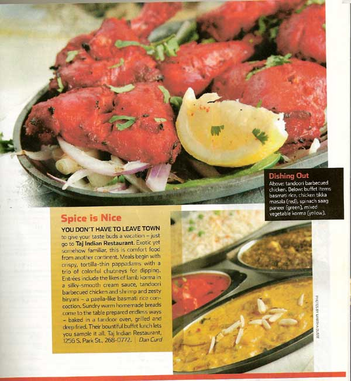

Taj is Always Good to us! I order food via Mr. Delivery (take a while on their end to get the food) but Taj's food is always so good! Mouth Watering! I try to go there and sit and eat but thats rare because i am very very busy! All im trying to say is that If you want to eat Indian food in Madison, WI or in the Madison WI area I'd go here first!
Pang L.
Came here over the weekend while in Madison i have to say I really enjoyed it! The service was amazing. Friendly waiters, food came on time, and everyone just just very happy. The FOOD was also the best I've had.
Remy S.
The first time I had it the food was great, just simply amazing. I am ordering again from them tonight. Happy eating everyone!!
=Kala
Loved the Mattar Paneer
Mohana
So delicious Chicken Tikka Masala and tasty garlic naan.
Faisal
Fulfilled my craving for sure! I had the Chicken Tikka Masala with a Cheese Naan and it was delicious and exactly what I expected.
Tricia
The rice was buttered and spiced well; with either tumeric or saffron. The sag aloo was earthy, fresh green fragrance; and the shahi paneer was exquisite: large chunks of cheese deeply curried in ginger and other spices.
Benjamin
Sauces on curries are pretty rich and creamy, not watery. Chicken is tender and actually white meat (unlike some other places). Getting an extra side order of rice with each curry is about the right amount.
Evan
One of Madison's finest Indian restaurants is located in a nondescript strip mall along South Park Street. The restaurant is easy to miss, but its rather bland exterior gives way to an attractive—almost luxurious—dining room inside. Dimly lit, very clean and comfortable, the restaurant features a spacious dining room with booths and tables. It offers good service and fine food with a menu that features recipes from both north and south India. We began a recent meal there in traditional fashion, with a server setting crispy papadum and several chutneys before us. More...
India is predominantly a vegetarian country, but most Indian restaurants in this country serve mostly meat-based fare. Taj Indian Restaurant (1256 S. Park St.) offers reliable renditions of traditional curry favorites made with beef, lamb, chicken and shrimp. Their vegetable biryani, however, is sublime. A pilaf-like dish made from b asmati rice and vegetables, it's fragrant, just a little spicy and large enough to share. You can add meat if you must, but I'd leave well enough alone.
India is predominantly a vegetarian country, but most Indian restaurants in this country serve mostly meat-based fare. Taj Indian Restaurant (1256 S. Park St.) offers reliable renditions of traditional curry favorites made with beef, lamb, chicken and shrimp. Their vegetable biryani, however, is sublime. A pilaf-like dish made from b asmati rice and vegetables, it's fragrant, just a little spicy and large enough to share. You can add meat if you must, but I'd leave well enough alone.
Drivers on Park Street are well advised to roll down their windows and ease up on the gas - tantalizing aromas have been wafting over a plain Jane strip mall on South Park Street for many years. The China House restaurant got things started in 1974. In 2003, Satnem Singh, owner and chef, and Devinder Kumar, chef, opened the Taj Indian Restaurant in the China House space. The duo came to Madison from Indianapolis, where they also cooked together. In 2003 Madison had just a few Indian restaurants. They visited here and liked the city, and the space was available. They decided to make a go of it. Things have gone very well. The Taj has been snatching up readers' polls since the beginning. Framed awards and letters from satisfied customers crowd the walls in the entryway. More...
You don't have to leave town to give your taste buds a vacation -- just go to Taj Indian Restaurant. Exotic yet somehow familiar, this is comfort food from another continent. Meals begin with crispy, tortilla-thin pappadams with a trio of colorful chutneys for dipping. Entr�es include the likes of lamb korma in a silky-smooth cream sauce, tandoori barbecued chicken and shrimp and zesty biryani -- a paella-like basmati rice concoction. Sundry warm homemade breads come to the table prepared endless ways -- baked in a tandoor oven, grilled and deep fried. Their bountiful buffet lunch lets you sample it all.
Taj offers an extensive selection of classic Indian chicken, lamb, beef, seafood and vegetarian dishes. I especially like the lamb shahi korma ($11.95), which combines chunks of tender lamb with cashews and raisins in a mild but aromatic cream sauce. It's always fun to go with a group so you can share, but for the single dinner Taj offers both a vegetarian ($11.95) and with meat ($12.95) combination dinner that changes nightly. At lunch they serve a remarkably good buffet, which is also an excellent way to experience new dishes. Taj's biggest shortcoming is its atmosphere. The reliable cooking, decent-size portions and resonable prices do a lot more to make the place attractive. Whether you a fan of Indian food or a neophyte, Taj should curry your favor.
The lunch buffet has already become popular in the few months since the restaurant opened, and it's easy to understand the attraction. It's a feast of curries with deep layers of flavors, the meats and seafood are fresh and tender, and the staff is solicitous. Despite the extensive menu, Taj seems to be the kind of rare place where, if you like Indian food, you can't go wrong. Bottom line: The lunch buffet is an impressive feast, the service is good, and the atmosphere is clean and hospitable. There's a lot for vegetarians. More...